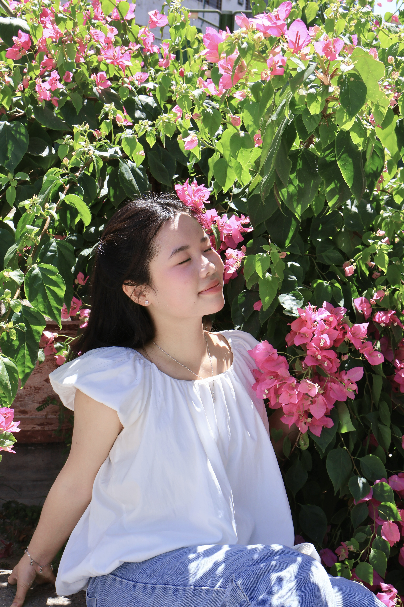

Dear future me,
Little Bao Nhi, big growing steps. I don't need to have everything figured out today. I can learn one thing, love one moment, and take one small brave step at a time.
Still a small fairy, just growing into her wings. ♡
Still a small fairy, just growing into her wings.
🧚♀️Tiểu tiên nữ xinh đẹp cute đáng iu nhất hệ mặt trời☀️

A tiny corner for the girl who is learning, creating, laughing and growing.
Little Bao Nhi, big growing steps. I don't need to have everything figured out today. I can learn one thing, love one moment, and take one small brave step at a time.
Still a small fairy, just growing into her wings. ♡
MBTI
ESTJ
Vibe✨
rainy eyes + sunny smile
Favorite world
Harry Potter ✦
Some fictional places simply feel like home.
A little magic, a little mischief, and a whole lot of memories.
Focused, determined, and always ready for the next match.
That complicated little Slytherin energy ✦
Messy, happy, imperfect — exactly how a scrapbook should feel.
A little album for the people who make ordinary days feel extra special.